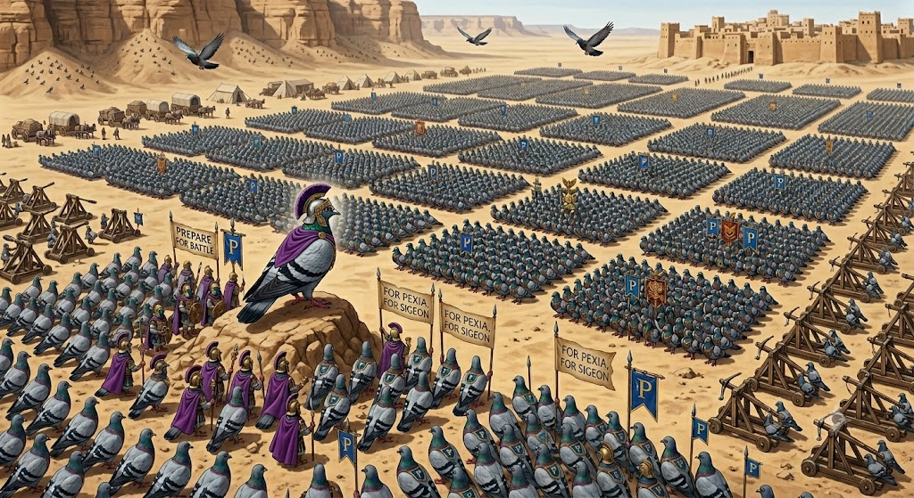
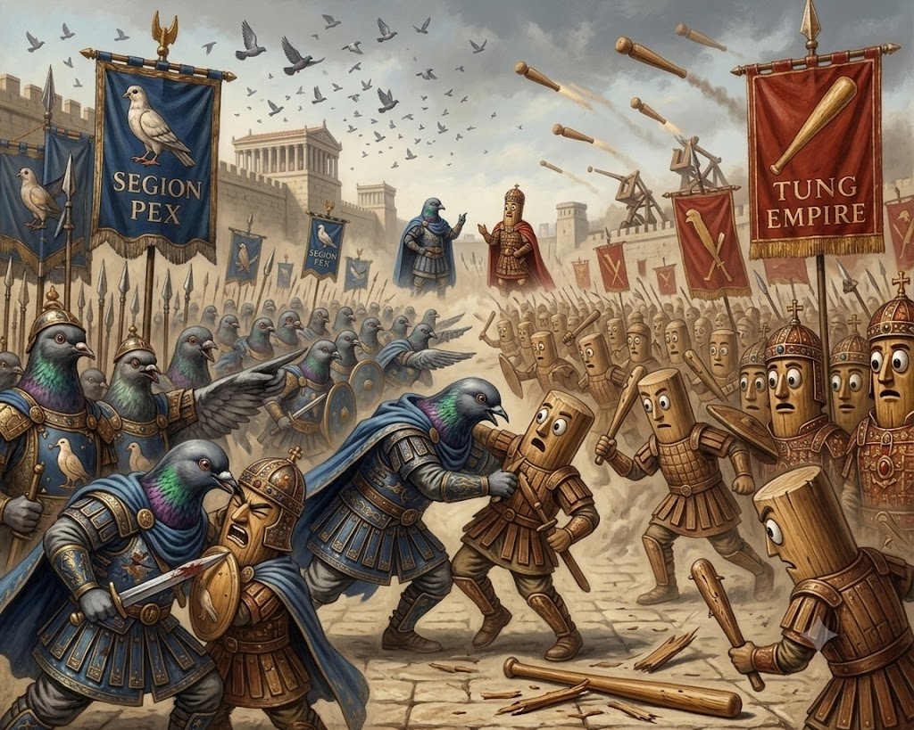

In 2000 BC, our ancestors established the first settlements along the coast. We were mainly a loose group of city states, all fighting eachother for resources. At this point, the pexia was simply a collection of small villages, all with their own leaders and their own ways of life.
But out of all 100+ costal villages, 1 stood out. They were the first to develop a centralised administration. And that village, was Pexia. Known for building one of the first trade networks in the region. And getting immensely rich off of it. Gold flowed to Pexia, and soon Pexia would become a regional power under Sigeon Pex.
In 900 BC, Sigeon Pex rose to power and unified the various city-states under one rule. Exact methods of unification are not well-documented, but it is clear that Sigeon's leadership was instrumental in creating a more cohesive and powerful state.

Oh how glorious Pexia was! It wwas a powerhouse and a centre of education of the region. Pexia had more gold flowing in than ever before. Not only did we have a thriving economy, but we also made significant advancements in science, art, and philosophy. We also had developed a new alliance with the Sahur Dynasty of the Ketongans.
In 400 BC, the Sahur Dynasty of the Ketongans launched an invasion of Pexia led by their king, King Tung II (T²). The invasion was initially successful, and the Sahur forces managed to capture several key cities. However, the Pexians were able to regroup and eventually push the invaders back, leading to a prolonged conflict that would define the next several decades.

Following the Sahur Invasion, Pexia entered a period of reconstruction and political upheaval. The conflict had weakened the state, but it also highlighted the need for stronger defenses and more effective governance.
During this period, Pexia experienced relative peace and stability. The state focused on rebuilding its infrastructure, strengthening its economy, and fostering cultural development. However, the political landscape remained fragile, with various factions vying for power.
One manuscript found in Pexia documents something known as "Verity". It is unclear what it exactly was, and its significance remains a mystery to historians.
The Manuscript documents Verity's appearane. A small yellow ball with a simple, abstract face. The photo we chose, is a reconstruction of it's appearance based on it's description.
Starting in 250 BC, the Pexian government started a series of legal, cultural, and economic reforms in order to fit into the international community. We ditched our old ways and converted to the standard Selcuk code.